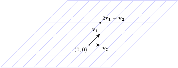

also spans \(W\text{.}\) But why is \(S\) ‘better’?
Solution.
It uses fewer vectors to span the same space.
A subspace \(U\) has many different spanning sets. We use the concept of linear independence to determine when sets of spanning vectors are the ‘most efficient’.
Definition4.2.1.Linear Independence.
A set of vectors \(\{ \mathbf{x}_1, \dots, \mathbf{x}_k \}\) in \(\R^n\) is said to be linearly independent, or simply independent if the only solution to the equation \(t_1 \mathbf{x}_1 + \dots + t_k \mathbf{x}_k = 0\) is trivial, i.e. \(t_1 = \cdots = t_k = 0\text{.}\)
A set of vectors \(\{ \mathbf{x}_1, \dots, \mathbf{x}_k \}\) in \(\R^n\) is linearly dependent if it is not linearly independent, i.e. if there exists scalars \(t_1,\dots,t_k\text{,}\) not all zero, such that \(t_1 \mathbf{x}_1 + \cdots + t_k \mathbf{x}_k = 0\text{.}\)
We need to determine the solutions to the equation \(t_1 \mathbf{v}_1 + t_2 \mathbf{v}_2 + t_3 \mathbf{v}_3\text{.}\) Expanding out this equation gives the system
There are two free variables corresponding to this matrix, which implies that there are two basic solutions to the equation, and thus the system has a non-trivial solution. Thus the vectors are not linearly independent.
The last example demonstrates an algorithm to verify whether a given set of vectors is linearly indendent.
Algorithm4.2.2.A Test of Independence.
To verify if a set \(\{ \mathbf{x}_1,\dots,\mathbf{x}_k \}\) are linearly independent:
Consider the system of linear equations \(t_1 \mathbf{x}_1 + \cdots + t_k \mathbf{x}_k = 0\text{.}\)
Solve the resulting linear homogeneous solution.
If there is a non-trivial solution to the equation, then the vectors are linearly dependent. Otherwise, the vectors are linearly independent.
Theorem4.2.3.
If \(\{ \mathbf{x}_1, \dots, \mathbf{x}_k \}\) is a linearly independent set of vectors in \(\R^n\text{,}\) then every vector in their span \(\spans \{ \mathbf{x}_1, \dots, \mathbf{x}_k \}\) has a unique representation as a linear combination of the \(\mathbf{x}_i\text{.}\)
Solution.
Let \(\mathbf{x}\) be an element of \(\spans \{ \mathbf{x}_1, \dots, \mathbf{x}_k \}\text{.}\) If the equation
But the vectors \(\mathbf{x}_1,\dots,\mathbf{x}_k\) are linearly independent, and so this equation has only a trivial solution. Thus \(a_1 - b_1, \dots, a_k - b_k = 0\text{,}\) i.e. \(a_1 = b_1, \dots, a_k = b_k\text{,}\) proving that the representation of \(\mathbf{x}\) as a linear combination is unique.
We could use row-reduction here, though in this case a more ad-hoc approach is more efficient. The third equation gives \(t_3 = 0\text{,}\) and once this is deduced the fourth equation gives \(t_1 = 0\text{.}\) Then the first equation gives \(t_2 = 0\text{.}\) Thus the only solution to the equation is the trivial solution, and so the vectors are linearly independent.
Activity4.2.4.
Is the set \(S = \{ \mathbf{0} \}\) linearly independent?
Hint.
Does the equation \(t \mathbf{0} = \mathbf{0}\) have a non-trivial solution?
Fact4.2.4.
The nonzero rows of a matrix in row echelon form are linearly independent.
SubsectionConnection to Invertibility Criteria
Consider a set of vectors \(\{ \mathbf{c}_1, \dots, \mathbf{c}_n \}\) in \(\R^m\text{,}\) and let \(A\) be the \(n \times m\) matrix whose columns are the vectors \(\mathbf{c}_1, \dots, \mathbf{c}_n\text{.}\)
Note that \(\{ \mathbf{c}_1, \dots, \mathbf{c}_n \}\) are linearly independent precisely when the equation \(A \mathbf{x} = \mathbf{0}\) has only the trivial solution.
Note that additionally, \(\spans \{ \mathbf{c}_1, \dots, \mathbf{c}_n \} = \R^m\) exactly when \(A \mathbf{x} = \mathbf{b}\) has a solution for all \(\mathbf{b}\) in \(\R^m\text{.}\)
We use these facts to extend our invertibility criteria for matrices.
Fact4.2.5.Invertibility Criteria.
Let \(A\) be a \(n \times n\) matrix. Then the following are equivalent:
\(A\) is invertible.
The columns of \(A\) are linearly independent.
The columns of \(A\) span \(\R^m\text{.}\)
The rows of \(A\) are linearly independent.
The rows of \(A\) span the set of all \(1 \times n\) rows (think of this as \(\R^n\text{.}\)
Activity4.2.5.
Let \(S = \{ \mathbf{v}_1, \mathbf{v}_2, \mathbf{v}_3 \}\text{,}\) where
If \(\mathbf{v}\) and \(\mathbf{w}\) are nonzero vectors in \(\R^3\text{,}\) show that \(\{ \mathbf{v}, \mathbf{w} \}\) is dependent if and only if \(\mathbf{v}\) and \(\mathbf{w}\) are parallel, i.e. if one vector is a scalar multiple of the other.
Solution.
If \(\mathbf{v}\) and \(\mathbf{w}\) are parallel, then one is a scalar multiple of the other, say \(\mathbf{v} = a \mathbf{w}\) for some scalar \(a\text{.}\) Then \(1 \mathbf{v} - a \mathbf{w} = 0\text{,}\) which is a non-trivial linear combination of \(\mathbf{v}\) and \(\mathbf{w}\text{,}\) so \(\{ \mathbf{v}, \mathbf{w} \}\) is dependent.
Conversely, if \(\{ \mathbf{v}, \mathbf{w} \}\) is dependent, then \(s \mathbf{v} + t \mathbf{w} = 0\) for some scalars \(s\) and \(t\text{,}\) where \(s \neq 0\) or \(t \neq 0\text{.}\) If, say, \(s \neq 0\text{,}\) then \(\mathbf{v} = -t/s \mathbf{w}\text{,}\) so \(\mathbf{v}\) and \(\mathbf{w}\) are parallel. A similar argument works if \(t \neq 0\text{.}\)
Activity4.2.7.
Let \(\mathbf{u},\mathbf{v}\text{,}\) and \(\mathbf{w}\) are non-zero vectors in \(\R^n\text{,}\) where \(\{ \mathbf{v}, \mathbf{w} \}\) is independent. Show that \(\{ \mathbf{u}, \mathbf{v}, \mathbf{w} \}\) is independent if and only if \(\mathbf{u}\) is not in the subspace \(M = \spans \{ \mathbf{v}, \mathbf{w}\}\text{.}\) See Figure 4.2.6 and Figure 4.2.7.
If \(\{ \mathbf{u}, \mathbf{v}, \mathbf{w} \}\) is independent, suppose that \(\mathbf{u}\) is in \(M = \spans \{ \mathbf{v}, \mathbf{w} \}\text{,}\) say, that \(\mathbf{u} = a \mathbf{v} + b \mathbf{w}\) for some scalars \(a\) and \(b\text{.}\) Then \(1 \mathbf{u} - a \mathbf{v} - b \mathbf{w} = 0\text{.}\) Thus a non-trivial linear combination of \(\mathbf{u}, \mathbf{v}\text{,}\) and \(\mathbf{w}\) is equal to zero, contradicting the independent of \(\{ \mathbf{u}, \mathbf{v}, \mathbf{w} \}\text{.}\)
On the other hand, suppose \(\mathbf{u}\) is not in \(M\text{.}\) We need to show that \(\{ \mathbf{u}, \mathbf{v}, \mathbf{w} \}\) is independent. If \(r \mathbf{u} + s \mathbf{v} + t \mathbf{w} = 0\text{,}\) where \(r\text{,}\)\(s\text{,}\) and \(t\) are not all zero, then \(r \neq 0\text{,}\) for otherwise \(s \mathbf{v} + t \mathbf{w} = 0\text{,}\) which contradicts the independence of \(\{ \mathbf{v}, \mathbf{w} \}\text{.}\) But then \(\mathbf{u} = -s/r \mathbf{v} - t/r \mathbf{w}\text{,}\) which contradicts that \(\mathbf{u}\) is not in \(M\text{.}\)
Note4.2.8.
More generally, if \(\{ \mathbf{x}_1, \dots, \mathbf{x}_k \}\) are a linearly independent set of vectors in \(\R^n\text{,}\) and \(\mathbf{x}_{k+1}\) is another vector in \(\R^n\text{,}\) then \(\{ \mathbf{x}_1, \dots, \mathbf{x}_{k+1} \}\) is a linearly independent set if and only if \(\mathbf{x}_{k+1}\) is not contained in the span of the set \(\{ \mathbf{x}_1, \dots, \mathbf{x}_k \}\text{.}\)
Activity4.2.8.
Prove that a matrix \(A\) has linearly independent columns if and only if \(A^T A\) is invertible.
Solution.
Suppose that the columns of \(A\) are linearly independent. We must show that \(A^T A\) is invertible, which is true if and only if the only solution to the equation \((A^T A) \mathbf{x} = \mathbf{0}\) only has the trivial solution. So suppose \((A^T A)\mathbf{x} = \mathbf{0}\text{.}\) Then
and the only way this quantity can be equal to zero is if \(v_1 = 0, \dots, v_n = 0\text{,}\) and thus that \(\mathbf{v} = 0\text{.}\) Thus \(A \mathbf{x} = 0\text{.}\) But because the columns of \(A\) are linearly independent, the only solution to \(A \mathbf{x} = 0\) is \(\mathbf{x} = 0\text{.}\) Therefore we have proved that \(A^T A\) is invertible.
Conversely, suppose that \(A^T A\) is invertible. To show \(A\) has linearly independent columns, it suffices to show that the equation \(A \mathbf{x} = 0\) has only the trivial solution. But if \(\mathbf{x}\) is any such solution, then
\begin{equation*}
(A^T A) \mathbf{x} = A^T (A \mathbf{x}) = A^T \mathbf{0} = \mathbf{0}\text{.}
\end{equation*}
Since \(A^T A\) is invertible, this can only be true if \(\mathbf{x} = 0\text{.}\) Thus only the trivial solution exists.
SubsectionBasis and Dimension
In geometry, we often describe lines as being ‘\(1\)-dimensional’, and planes as being ‘\(2\)-dimensional’. We can describe the notion of dimension more precisely using linear algebra.
Theorem4.2.9.A Fundamental Theorem.
Let \(U\) be a subspace of \(\R^n\text{.}\) If \(U\) is spanned by \(m\) vectors, and if \(U\) contains \(k\) linearly independent vectors, then \(k \leq m\text{.}\)
Activity4.2.9.
Is it possible to have \(4\) linearly independent vectors in \(\R^3\text{?}\)
Solution.
It is not possible. \(\R^3\) is spanned by \(3\) vectors (for example, the standard basis vectors), so by Theorem 4.2.9, any linearly independent subset of \(\R^3\) must contain at most \(3\) vectors.
Definition4.2.10.Bases of Vector Spaces.
If \(U\) is a subspace of \(\R^n\text{,}\) a set of vectors \(\{ \mathbf{x}_1, \dots, \mathbf{x}_m \}\) in \(U\) is called a basis of \(U\) if it satisfies the following two conditions:
\(\{ \mathbf{x}_1, \dots, \mathbf{x}_m \}\) is linearly independent.
If \(\{ \mathbf{v}_1, \dots, \mathbf{v}_m \}\) and \(\{ \mathbf{w}_1, \dots, \mathbf{w}_k \}\) are both bases for a subspace \(U\) of \(\R^n\text{,}\) then \(m = k\text{.}\)
Theorem 4.2.11 says that, even though a subspace has many different bases, all bases must have the same number of vectors.
Definition4.2.12.Dimensions of Vector Spaces.
The dimension of a non-zero subspace \(U\) of \(\R^n\) is the number of vectors in a basis for \(U\text{.}\) We often write \(\dimens(U)\) for the dimension of \(U\text{,}\) and if \(\dimens(U) = n\text{,}\) we say \(U\) is \(n\)-dimensional. By convention, the dimension of the trivial subspace \(\{ \mathbf{0} \}\) is zero.
Activity4.2.10.
(a)
What is the dimension of \(\R^3\text{?}\)
Solution.
The standard basis for \(\R^3\) is a basis, i.e. the set of three vectors \(\{ \mathbf{e}_1, \mathbf{e}_2, \mathbf{e}_3 \}\) defined in Definition 2.2.9 is linearly independent and spans \(\R^3\text{.}\) Thus \(\R^3\) has dimension \(3\text{.}\)
(b)
What is the dimension of \(\R^4\text{?}\)
Solution.
The standard basis \(\mathbf{e}_1, \dots, \mathbf{e}_4\) for \(\R^4\) is a basis, and is a set of four vectors, so \(\dimens(\R^4) = 4\text{.}\)
(c)
What is the dimension of \(\R^n\text{?}\)
Solution.
The standard basis is a basis for \(\R^n\text{,}\) so \(\dimens(\R^n) = n\text{.}\)
Activity4.2.11.
Find the dimension of the space
\begin{equation*}
W = \left\{ \begin{bmatrix} r \\ s \\ r + 2s \end{bmatrix} : r,s \in \R \right\}\text{.}
\end{equation*}
is a basis for \(W\) since \(S\) is linearly independent (neither vector in \(S\) is the scalar multiple of the other). In the solution to Activity 4.1.5, we showed that these vectors span \(W\text{,}\) so \(S\) is a basis for \(W\text{.}\) Since \(S\) contains two vectors, \(\dimens(W) = 2\text{.}\)
Fact4.2.13.
Let \(U\) be a non-zero subspace of \(\R^n\text{.}\) Then
\(U\) has a basis and \(\dimens(U) \leq n\text{.}\)
Any independent set in \(U\) can be enlarged (by adding some subset of vectors in any fixed basis) to obtain a basis of \(U\text{.}\)
Any spanning set for \(U\) contains a subset of vectors which form a basis for \(U\text{.}\)
Theorem4.2.14.
Let \(U\) be a subspace of \(\R^n\) where \(\dimens(U) = m\) and let \(B = \{ \mathbf{x}_1, \dots, \mathbf{x}_m \}\) be a set of \(m\) vectors in \(U\text{.}\) Then \(B\) is linearly independent if and only if \(B\) spans \(U\text{.}\)
Proof.
Suppose \(B\) is linearly independent and \(|B| = m = \dimens(U)\text{,}\) then by Theorem 4.2.9, one cannot add any new vectors to the set \(B\) and remain linearly independent. But Fact 4.2.13 says that if \(B\) is not already a spanning set for \(U\text{,}\) one can add new vectors to \(B\) from \(U\text{,}\) and remain linearly independent. Thus \(B\) must be a basis.
Conversely, if \(B\) spans \(U\text{,}\) then by Fact 4.2.13 we can choose a subset of \(B\) which is a basis for \(U\text{.}\) But any proper subset of \(B\) contains fewer than \(m\) vectors, and thus by Theorem 4.2.11, cannot be a basis for \(U\text{.}\) Thus \(B\) is the only subset of itself that can be a bais, and because \(B\) must contain a basis, the set \(B\) must itself be a basis.
Theorem4.2.15.
Let \(U\) and \(W\) be subspaces of \(\R^n\) with \(U \subseteq W\text{.}\) Then:
\(\dimens(U) \leq \dimens(W)\text{.}\)
If \(\dimens(U) = \dimens(W)\text{,}\) then \(U = W\text{.}\)
Activity4.2.12.
Find a basis for \(\R^4\) that contains the two vectors
Since \(\R^4\) is four dimensional, we must find two vectors \(\mathbf{w}_1\) and \(\mathbf{w}_2\) such that the vectors \(\{ \mathbf{v}_1, \mathbf{v}_2, \mathbf{w}_1,\mathbf{w}_2 \}\) is linearly independent. Fact 4.2.13 states that we can choose these vectors from any basis, so we might as well choose them from the standard basis \(\{ \mathbf{e}_1, \mathbf{e}_2, \mathbf{e}_3, \mathbf{e}_4 \}\text{.}\)
One strategy is to choose one vector \(\mathbf{e}_i\) not contained in the span of the set \(\{ \mathbf{v}_1, \mathbf{v}_2 \}\text{,}\) and then choose a vector \(\mathbf{e}_j\) not contained in the span of the set \(\{ \mathbf{e}_i, \mathbf{v}_1, \mathbf{v}_2 \}\text{.}\) By Note 4.2.8, the set \(\{ \mathbf{e}_j, \mathbf{e}_i, \mathbf{v}_1, \mathbf{v}_2 \}\text{.}\)
The vector \(\mathbf{e}_2\) is not contained in the span of the set \(\{ \mathbf{v}_1, \mathbf{v}_2 \}\text{,}\) since the second entry in any linear combination of the vectors \(\mathbf{v}_1\) and \(\mathbf{v}_2\) is equal to zero, and thus the vector cannot be equal to \(\mathbf{e}_2\text{.}\)
We also claim that the vector \(\mathbf{e}_1\) is not contained in the span of the set \(\{ \mathbf{e}_2, \mathbf{v}_1, \mathbf{v}_2 \}\text{.}\) If
\begin{equation*}
\mathbf{e}_1 = a \mathbf{e}_2 + b \mathbf{v}_1 + \mathbf{v}_2\text{,}
\end{equation*}
then checking each entry, we get the system of linear equations
The first and forth equations immediately contradict one another, so such a system cannot be solved.
Thus \(\{ \mathbf{e}_1, \mathbf{e}_2, \mathbf{v}_1, \mathbf{v}_2 \}\) is a basis for \(\R^4\text{.}\)
SubsectionBases and Coordinate Systems
One way to think of a basis is as providing a coordinate system for a subspace. The uniquely determinied coefficients in the linear combination of a vector in the subspace are the coordinates.
Definition4.2.16.Ordered Bases of a Subspace.
Let \(S = \{ \mathbf{b}_1, \dots, \mathbf{b}_n \}\) be a basis of the subspace \(U\text{.}\) We call the tuple \(B = (\mathbf{b}_1, \dots, \mathbf{b}_n)\) an ordered basis of \(U\text{.}\)
As an example, \((\mathbf{e}_1, \mathbf{e}_2)\) and \((\mathbf{e}_2, \mathbf{e}_1)\) are two different ordered bases of \(\R^2\text{.}\) The two sets \(\{ \mathbf{e}_1, \mathbf{e}_2 \}\) and \(\{ \mathbf{e}_2, \mathbf{e}_1 \}\text{,}\) and so describe the same bases of \(\R^2\text{.}\)
Note4.2.17.
Many Linear Algebra textbooks, including Linear Algebra With Applications, Nicholson write ordered bases using set notation \(\{ \cdots \}\text{,}\) despite the order in which the basis elements appear being important. We use tuple notation \(( \cdots )\) to emphasize the importance of the order.
Given an ordered basis \(B\) for an \(m\)-dimensional subspace \(U\) of \(\R^n\text{,}\) and any vector \(\mathbf{v} \in U\text{,}\) we can describe it’s ‘coordinates’ with respect to the basis \(B\text{,}\) identifying \(\mathbf{v}\) with a vector in \(\R^m\text{.}\)
Definition4.2.18.Coordinate Vectors With Respect to a Basis.
Let \(U\) be an \(m\)-dimensional subspace of \(\R^n\text{,}\) and let \(B = (\mathbf{b}_1,\dots,\mathbf{b}_m)\) be an ordered basis for \(U\text{.}\) Given any vector \(\mathbf{v} \in U\text{,}\) there exists unique scalars \(t_1,\dots,t_m\) such that
See Figure 4.2.20 for an illustration of this concept, taken from Stanford’s MATH 51 Textbook.
Note4.2.19.
If \(B = (\mathbf{b}_1,\dots,\mathbf{b}_m)\) is an ordered basis for a subspace \(U\text{,}\) then \(C_B(\mathbf{b}_i) = \mathbf{e}_i\text{,}\) where \(\mathbf{e_i}\) is the \(i\)th standard basis vector in \(\R^m\text{.}\)

Figure4.2.20.A parallelelogram grid constructed from a basis \(B = (\mathbf{v}_1, \mathbf{v}_2)\) for \(\R^2\text{.}\) The points lying at the intersection of lines on the grid are precisely those vectors \(\mathbf{v} \in \R^2\) where the entries of the vector \(C_B(\mathbf{v})\) are integers.
Activity4.2.13.
Let \(B = (\mathbf{v}_1, \mathbf{v}_2, \mathbf{v}_3)\) be an ordered basis for \(\R^3\text{,}\) where